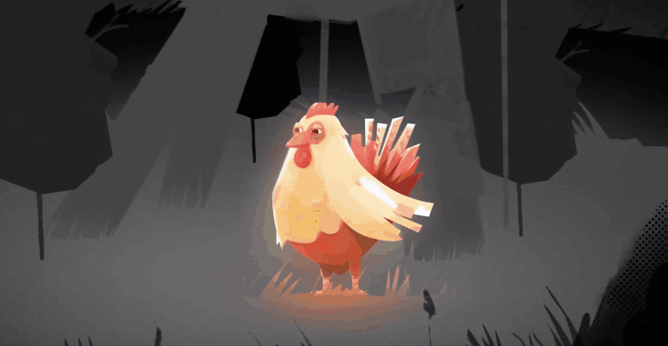
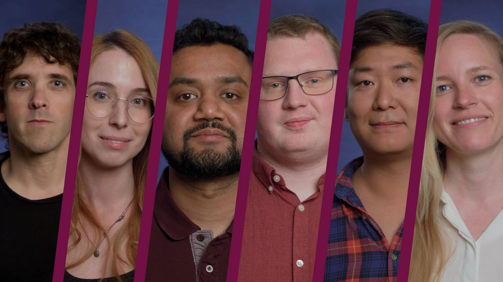
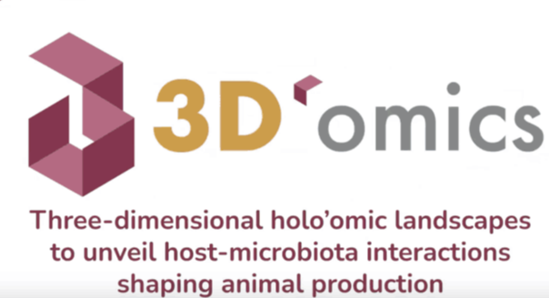
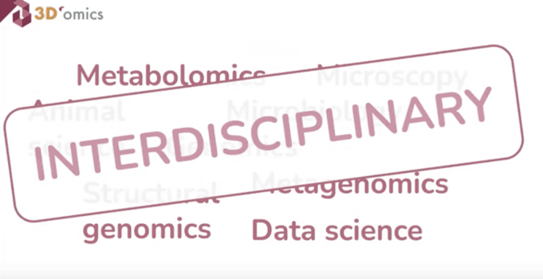
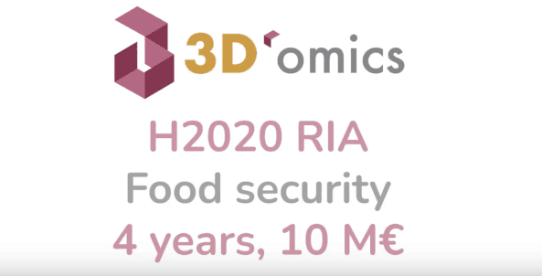

Project explainer
What is the 3D'omics project?
An introduction to the 3D'omics H2020 project and its aims.
Watch on YouTubeConnecting microbiome research with the public through scientific outreach, events, and accessible project stories.
Engagement and knowledge sharing
The 3D'omics partners participated in and actively supported local, national, and international scientific outreach initiatives, explaining the importance of microorganisms in scientific and applied contexts to the wider public.
3D'omics took part in annual European Commission outreach activities, including World Microbiome Day and Research & Innovation Days. Academic beneficiaries also contributed through their active public-outreach platforms. We shared 3D'omics participation and presence through our social media channels.
Watch 3D'omics
Explore the ideas, collaborators, and scientific challenges behind the 3D'omics project.

Project explainer
An introduction to the 3D'omics H2020 project and its aims.
Watch on YouTube
Behind the scenes
Follow the journey to develop new methods for exploring the microbiome in ways once thought impossible.
Watch on YouTube
Project story
Meet the partners and learn how the H2020 3D'omics project began.
Watch on YouTube
Project presentation
A guided presentation of the 3D'omics project.
Watch on YouTube
Podcast episode
Associate Professor Antton Alberdi discusses the project application, its scope, and the science behind 3D'omics.
Watch on YouTubeThe 3D'omics partners participated and actively supported local, national, and international scientific outreach initiatives, in which the importance of microorganisms in a scientific and applied context is explained to the general public.
3D'omics participated for example in annual outreach activities organised by the European Commission, such as the “World Microbiome Day” events, “Research & Innovation days”, and similar. In addition, all academic beneficiaries have active public outreach platforms to which 3D'omics also contributed.
We communicated 3D'omics participation and presence via our social media channels.

This project has received funding from the European Union’s Horizon 2020 Research
and Innovation programme under grant agreement number No. 101000309.
-
Coordinator: Antton Alberdi (UCPH)
Data and privacy policy Contact: 3d-omics@sund.ku.dk